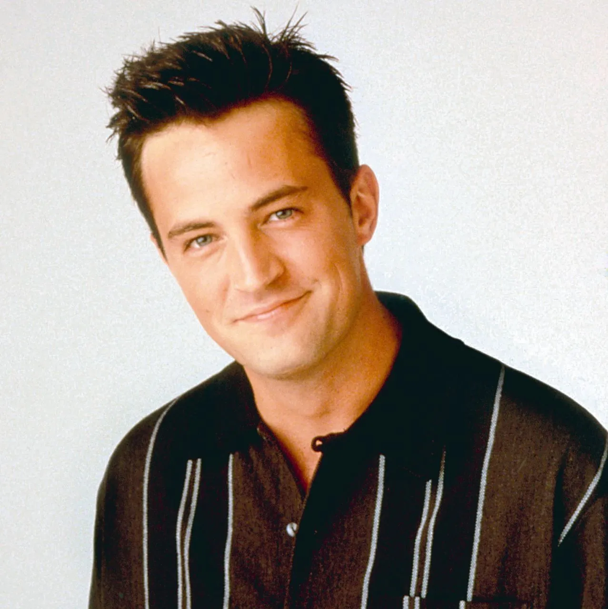
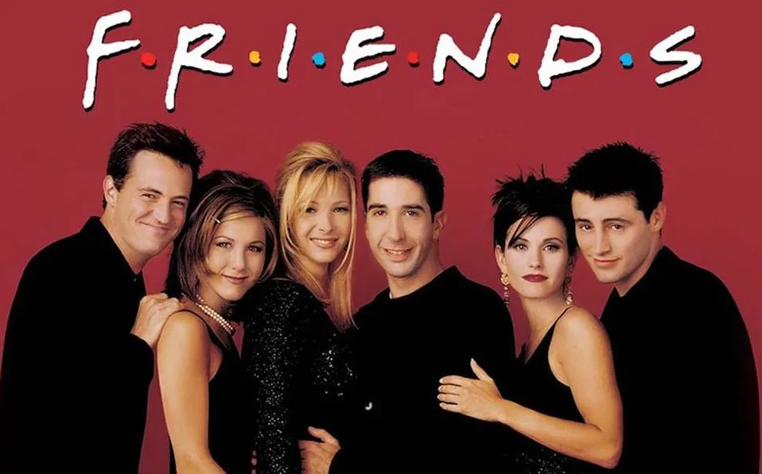

Enlaces utilizados para las imágenes
https://turbologo.com/articles/friends-logo/
https://www.quien.com/espectaculos/2021/02/24/tic-jennifer-aniston-friends-se-hizo-viral-26-anos-despues
https://www.goodhousekeeping.com/beauty/g3633/courteney-cox-then-and-now/

https://www.vogue.in/wellness/content/lisa-kudrow-opens-up-about-facing-body-insecurity-when-filming-friends-jennifer-aniston-courtney-cox

https://www.wsj.com/arts-culture/television/friends-star-matthew-perry-dies-at-54-1e7d5716

https://www.eonline.com/news/1172338/friends-david-schwimmer-finally-settles-ross-and-rachels-we-were-on-a-break-debate

https://www.nbcnews.com/id/wbna4908317

https://lafrikileria.com/blog/razones-volver-ver-serie-friends/
Enlaces utilizados para la información
https://es.wikipedia.org/wiki/Friends
https://es.wikipedia.org/wiki/Jennifer_Aniston
https://es.wikipedia.org/wiki/Courteney_Cox
https://es.wikipedia.org/wiki/Lisa_Kudrow
https://es.wikipedia.org/wiki/Matt_LeBlanc
https://es.wikipedia.org/wiki/Matthew_Perry_(actor)
https://es.wikipedia.org/wiki/David_Schwimmer
https://www.formulatv.com/personas/jennifer-aniston/curiosidades/
https://www.10-facts-about.com/es/courteney-cox/id/782
https://www.youtube.com/watch?v=QyEAPrp_Q9U
https://www.fotogramas.es/noticias-cine/g16073298/de-chandler-bing-a-mathew-perry-15-curiosidades-sobre-el-actor/
https://ezpoiler.com/curiosidades/este-es-el-secreto-que-jennifer-aniston-y-david-schwimmer-tenian-guardado
https://www.elmundo.es/f5/mira/2019/09/23/5d889d67fc6c83b2408b4573.html
https://los40.com/los40/2016/11/02/cinetv/1478119806_509633.html
https://www.milenio.com/espectaculos/famosos/matt-leblanc-datos-curiosos-protagonista-friends